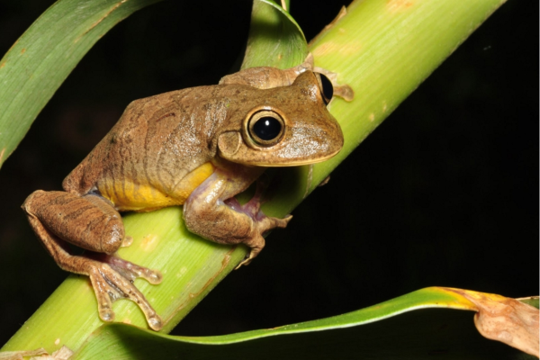

Noticia de HOJE
Sapinho comeria ácaros e formigas para obter toxinas e se defender de predadores e doençasFlorestas dando espaço a lavouras e cidades, despejo de venenos agrícolas, clima mutante e outros impactos humanos encolhem a biodiversidade mundial diariamente. No Brasil não é diferente e muitas espécies são extintas ou se tornam cada vez mais raras. Uma delas é o ameaçado sapinho-de-barriga-vermelha-do-pampa (Melanophryniscus sanmartini), encontrado até em novas áreas após cientistas percorrerem mais de 1,2 mil km em campos naturais gaúchos, de dezembro passado a junho deste ano. Com até 3 cm e cores vivas, o animal tem habilidades raras, como aparentemente comer ácaros e formigas para conseguir toxinas e se defender de predadores e doenças, contam pesquisadores que atuam com a espécie.
Parte dos expedicionários, o doutor em Zoologia pela Pontifícia Universidade Católica do Rio Grande do Sul, Patrick Colombo, avalia que o esforço permite jogar mais luz sobre suas características, como onde e quando canta, o que come e qual a situação de suas moradas naturais. “Quanto mais precisas as informações, melhores serão as decisões na hora de planejar as estratégias de conservação. E não só para o sapinho, mas para [outras] espécies de animais e plantas”, reforçou o biólogo, do Museu de Ciências Naturais da Secretaria Estadual do Meio Ambiente e Infraestrutura (Sema/RS).
Uma das maiores ameaças ao futuro do anfíbio é a destruição de seus habitats pela expansão agrícola, já que ele procria em poças e pequenos riachos formados pelas chuvas. “Quando estão secos é mais fácil convertê-los em lavouras, estradas e até aterros”, detalha Colombo. Por essas e outras, o pesquisador pede freios urgentes no avanço de lavouras sobre áreas úmidas e a formação de corredores ecológicos. “É preciso acelerar o Cadastro Ambiental Rural (CAR), a averbação das reservas legais e a criação de unidades de conservação pesando áreas onde vide o sapinho”, diz. As até agora duas expedições compõem ações para proteger espécies ameaçadas na Campanha Sul e na Serra do Sudeste e englobam o Pró-Espécies, projeto financiado pelo Fundo Global para o Meio Ambiente coordenado pelo Ministério do Meio Ambiente e Mudança do Clima e implantado por Fundo Brasileiro para a Biodiversidade e WWF-Brasil.